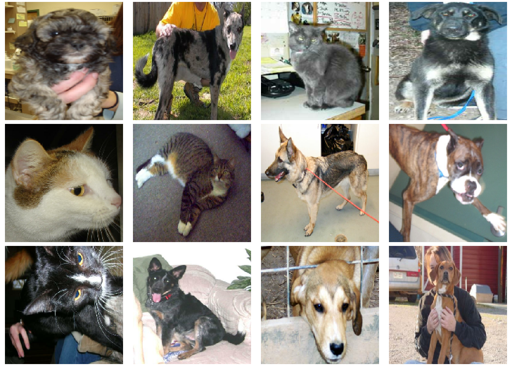
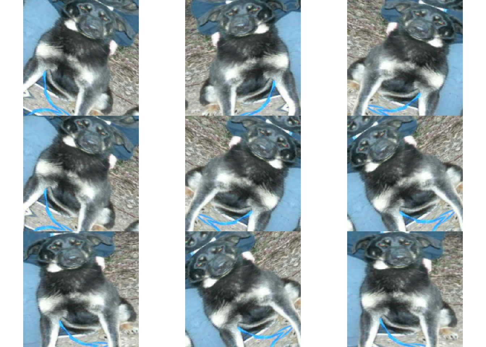
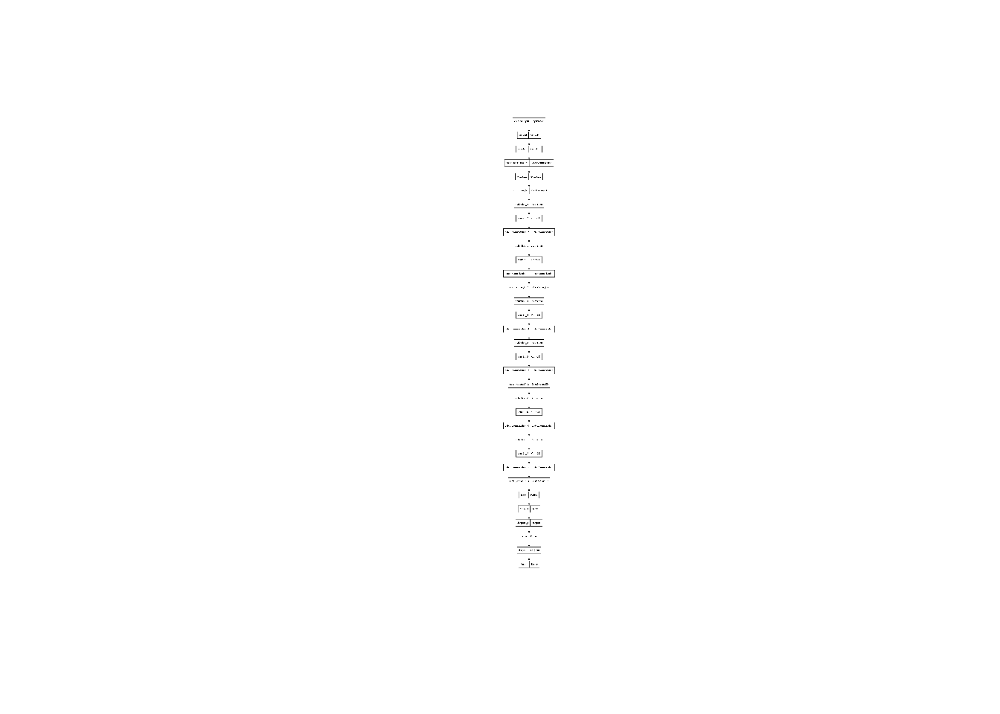
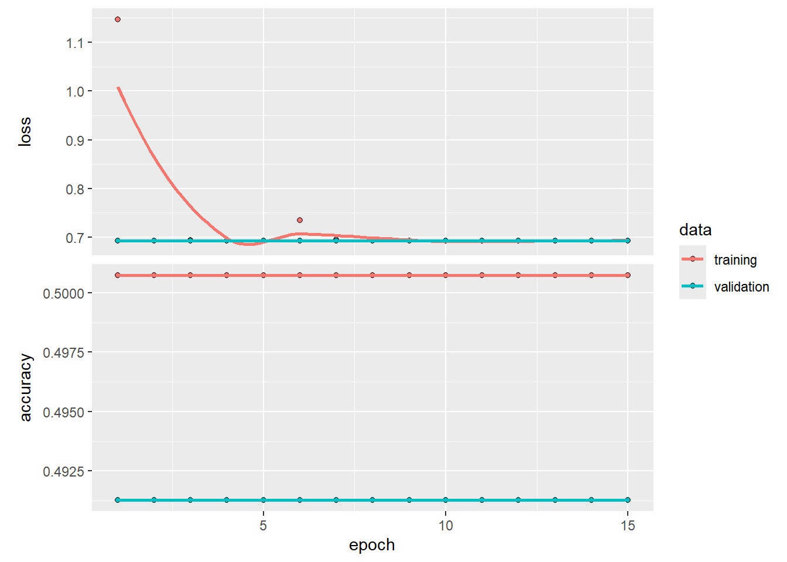
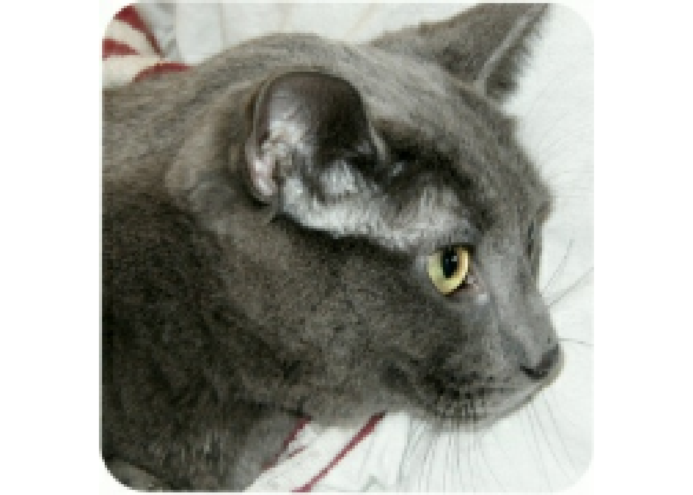

library(tensorflow)
library(keras)Warning: package 'keras' was built under R version 4.3.3library(tfdatasets)Warning: package 'tfdatasets' was built under R version 4.3.3set.seed(1234)CNN: Ejemplo de Gatos y Perros en R
Esta vez exploraremos un ejemplo práctico empleando la biblioteca keras en R, pero esta vez haremos la clasificación de imágenes desde cero, comenzando desde archivos locales de imagenes JPEG en el disco. En esta ocasión, usaremos los datos de clasificación binaria Cats vs Dogs de Kaggle.
Este ejemplo está basado en el tutorial de Tensorflow para R.
library(tensorflow)
library(keras)Warning: package 'keras' was built under R version 4.3.3library(tfdatasets)Warning: package 'tfdatasets' was built under R version 4.3.3set.seed(1234)Primero, descargaremos el archivo ZIP de 786M que contiene los datos en bruto. Notar el manejo y creación de carpetas, utilizando el directorio relativo de R ("./).
url <- "https://download.microsoft.com/download/3/E/1/3E1C3F21-ECDB-4869-8368-6DEBA77B919F/kagglecatsanddogs_5340.zip"
options(timeout = 60 * 5) # 5 minutes
download.file(url, destfile = "./db/cats_and_dogs/kagglecatsanddogs_5340.zip") # (786.7 MB)
## Para ver un listado de todo lo que contiene el archivo zip:
# zip::zip_list("./db/cats_and_dogs/kagglecatsanddogs_5340.zip") |> tibble::as_tibble()
zip::unzip("./db/cats_and_dogs/kagglecatsanddogs_5340.zip", exdir = "./db/cats_and_dogs/")Ahora tenemos una carpeta llamada PetImages que contiene dos subcarpetas, Cat y Dog. Cada subcarpeta contiene archivos de imágenes para cada categoría.
fs::dir_info("./db/cats_and_dogs/PetImages")# A tibble: 2 × 18
path type size permissions modification_time user group device_id
<fs::path> <fct> <fs:> <fs::perms> <dttm> <chr> <chr> <dbl>
1 …tImages/Cat dire… 0 rw- 2024-05-20 20:42:14 <NA> <NA> 2.12e9
2 …tImages/Dog dire… 0 rw- 2024-05-20 20:42:15 <NA> <NA> 2.12e9
# ℹ 10 more variables: hard_links <dbl>, special_device_id <dbl>, inode <dbl>,
# block_size <dbl>, blocks <dbl>, flags <int>, generation <dbl>,
# access_time <dttm>, change_time <dttm>, birth_time <dttm>Cuando se trabaja con una gran cantidad de datos de imágenes del mundo real, es común encontrar imágenes corruptas que no pueden ser leídas. Filtraremos las imágenes mal codificadas que no tienen el string JFIF en su header.
n_deleted <- 0L
for(filepath in list.files("./db/cats_and_dogs/PetImages", pattern = "\\.jpg$",
recursive = TRUE, full.names = TRUE)) {
header <- readBin(filepath, what = "raw", n = 10)
if(!identical(header[7:10], charToRaw("JFIF"))) {
n_deleted <- n_deleted + 1L
unlink(filepath)
}
}
cat(sprintf("%d imagenes eliminadas\n", n_deleted))0 imagenes eliminadasDatasetimage_size <- c(180, 180)
batch_size <- 32
train_ds <- image_dataset_from_directory(
"./db/cats_and_dogs/PetImages",
validation_split = 0.2,
subset = "training",
seed = 610,
image_size = image_size,
batch_size = batch_size,
)Found 23198 files belonging to 2 classes.
Using 18559 files for training.val_ds <- image_dataset_from_directory(
"./db/cats_and_dogs/PetImages",
validation_split = 0.2,
subset = "validation",
seed = 610,
image_size = image_size,
batch_size = batch_size,
)Found 23198 files belonging to 2 classes.
Using 4639 files for validation.batch <- train_ds %>%
as_iterator() %>%
iter_next()
str(batch)List of 2
$ :<tf.Tensor: shape=(32, 180, 180, 3), dtype=float32, numpy=…>
$ :<tf.Tensor: shape=(32), dtype=int32, numpy=…>c(images, labels) %<-% batchdisplay_image_tensor <- function(x, ..., max = 255,
plot_margins = c(0, 0, 0, 0)) {
if(!is.null(plot_margins))
par(mar = plot_margins)
x %>%
as.array() %>%
drop() %>%
as.raster(max = max) %>%
plot(..., interpolate = FALSE)
}
par(mfrow = c(3, 4))
for (i in 1:12)
display_image_tensor(images[i,,,],
plot_margins = rep(.2, 4))
Cuando no se cuenta con un conjunto de datos de imágenes suficientemente grande, es una buena práctica introducir diversidad en las muestras de manera artificial aplicando transformaciones aleatorias, pero realistas, a las imágenes de entrenamiento. Ejemplos son giros horizontales o pequeñas rotaciones aleatorias. Esto ayuda a exponer el modelo a diferentes aspectos de los datos de entrenamiento mientras disminuye el sobreajuste (overfitting).
data_augmentation =
keras_model_sequential(input_shape = c(image_size, 3)) %>%
layer_random_flip("horizontal") %>%
layer_random_rotation(factor = 0.1)Visualizamos cómo se verían las muestras aumentadas, aplicando data_augmentation repetidamente a la primera imagen del conjunto de datos:
par(mfrow = c(3, 3))
for (i in 1:9) {
images[4, , , , drop = FALSE] %>%
data_augmentation() %>%
display_image_tensor()
}
Las imágenes cuentan un tamaño estándar (180x180), ya que están siendo generadas como lotes contiguos de float32 por nuestro conjunto de datos. Sin embargo, los valores de sus canales RGB están en el rango [0, 255]. Esto no es ideal para una red neuronal; en general, se debería intentar que los valores de entrada sean pequeños. Aquí, estandarizaremos los valores para que estén en el rango [0, 1] usando una capa de Reescalado (rescaling) al inicio del modelo.
Hay dos maneras de usar el preprocesador data_augmentation:
Opción 1: Hacerlo parte del modelo, de la siguiente manera:
x <- layer_input(shape = input_shape) %>%
data_augmentation() %>%
layer_rescaling(1./255)
... # Resto del modeloCon esta opción, el aumento de datos ocurrirá en el dispositivo, de manera sincrónica con el resto de la ejecución del modelo, lo que significa que se beneficiará de la aceleración de la GPU. Se debe tomar en cuenta que el aumento de datos no ocurrirá en la prueba del modelo, por lo que los conjuntos de entrada sólo se aumentarán durante fit(), no cuando se utilizen los comandos evaluate() o predict(). Si se está entrenando en GPU, esta puede ser una buena opción.
Opción 2: aplicar data_augmentation al conjunto de datos, de modo que se obtenga un conjunto de datos que genere lotes de imágenes aumentadas, como se ve a continuación:
augmented_train_ds <- train_ds %>%
dataset_map(function(x, y) {
x <- data_augmentation(x, training = TRUE)
list(x, y)
})Con esta opción, el aumento de datos ocurrirá utilizando la CPU, de manera asincrónica, y será almacenada en búfer antes de entrar en el modelo (esto se debe a que todas las operaciones de TF Dataset, incluidas las definidas en dataset_map(), están fijadas a la CPU).
Si se está entrenando un modelo CPU, esta es la mejor opción, ya que hace que el aumento de datos sea asincrónico y no bloqueará el proceso. En este caso, se optará por la segunda opción.
Aplicamos el aumento de datos a los datos de entrenamiento y aseguramos el uso de la prelectura en búfer para poder generar datos desde el disco sin que la E/S se vuelva un factor bloqueante:
# Aplicar `data_augmentation` a las imágenes de entrenamiento.
train_ds <- train_ds %>%
dataset_map(function(images, labels) {
list(data_augmentation(images, training = TRUE),
labels)
})
# La prelectura en búfer de muestras en la memoria GPU ayuda a maximizar la utilización de la GPU.
# train_ds %<>% dataset_prefetch()
# val_ds %<>% dataset_prefetch()Notar que, se debe establecer el input_shape() en la primera capa convolucional. Se puede hacer de otra manera, al usar una API funcional.
modelo <- keras_model_sequential(name = "Modelo_CNN") %>%
# Capa de convolución
layer_conv_2d(128, 3, strides = 2, padding = "same",
input_shape = c(image_size, 3)) %>%
layer_rescaling(1.0 / 255) %>% # Capa de escalamiento
layer_batch_normalization() %>%
layer_activation("relu") %>%
layer_max_pooling_2d(3, strides = 2, padding = "same")
for (size in c(256, 512, 728)) {
modelo = modelo %>%
layer_activation("relu") %>%
layer_conv_2d(size, 3, padding = "same") %>%
layer_batch_normalization() %>%
layer_activation("relu") %>%
layer_conv_2d(size, 3, padding = "same") %>%
layer_batch_normalization() %>%
layer_max_pooling_2d(3, strides = 2, padding = "same")
}
modelo = modelo %>%
layer_flatten() %>%
layer_dense(units = 128, activation = "relu") %>%
layer_dropout(rate = 0.5) %>% # Añade capa dropout
layer_dense(units = 64, activation = "relu") %>%
layer_dropout(rate = 0.5) %>% # Añade capa dropout
layer_dense(units = 1,
activation = "softmax",
name = "Output")Mostramos la estructura del modelo:
plot(modelo)
epochs <- 15
callbacks <- list(callback_model_checkpoint("./db/cats_and_dogs/save_at_{epoch}.keras"))
modelo %>% compile(
optimizer = optimizer_adam(1e-3),
loss = "binary_crossentropy",
metrics = list("accuracy"),
)
tiempo_ini = Sys.time() #Para medir el tiempo de entrenamiento
history <- modelo %>% fit(
train_ds,
epochs = epochs,
callbacks = callbacks,
validation_data = val_ds,
)Epoch 1/15
580/580 - 1628s - loss: 1.1466 - accuracy: 0.5007 - val_loss: 0.6931 - val_accuracy: 0.4913 - 1628s/epoch - 3s/step
Epoch 2/15
580/580 - 1612s - loss: 0.6932 - accuracy: 0.5007 - val_loss: 0.6931 - val_accuracy: 0.4913 - 1612s/epoch - 3s/step
Epoch 3/15
580/580 - 1693s - loss: 0.6942 - accuracy: 0.5007 - val_loss: 0.6931 - val_accuracy: 0.4913 - 1693s/epoch - 3s/step
Epoch 4/15
580/580 - 1660s - loss: 0.6932 - accuracy: 0.5007 - val_loss: 0.6932 - val_accuracy: 0.4913 - 1660s/epoch - 3s/step
Epoch 5/15
580/580 - 1672s - loss: 0.6932 - accuracy: 0.5007 - val_loss: 0.6932 - val_accuracy: 0.4913 - 1672s/epoch - 3s/step
Epoch 6/15
580/580 - 1717s - loss: 0.7346 - accuracy: 0.5007 - val_loss: 0.6931 - val_accuracy: 0.4913 - 1717s/epoch - 3s/step
Epoch 7/15
580/580 - 1662s - loss: 0.6952 - accuracy: 0.5007 - val_loss: 0.6933 - val_accuracy: 0.4913 - 1662s/epoch - 3s/step
Epoch 8/15
580/580 - 1776s - loss: 0.6932 - accuracy: 0.5007 - val_loss: 0.6933 - val_accuracy: 0.4913 - 1776s/epoch - 3s/step
Epoch 9/15
580/580 - 1779s - loss: 0.6932 - accuracy: 0.5007 - val_loss: 0.6932 - val_accuracy: 0.4913 - 1779s/epoch - 3s/step
Epoch 10/15
580/580 - 1771s - loss: 0.6932 - accuracy: 0.5007 - val_loss: 0.6932 - val_accuracy: 0.4913 - 1771s/epoch - 3s/step
Epoch 11/15
580/580 - 1777s - loss: 0.6932 - accuracy: 0.5007 - val_loss: 0.6932 - val_accuracy: 0.4913 - 1777s/epoch - 3s/step
Epoch 12/15
580/580 - 1772s - loss: 0.6932 - accuracy: 0.5007 - val_loss: 0.6932 - val_accuracy: 0.4913 - 1772s/epoch - 3s/step
Epoch 13/15
580/580 - 1774s - loss: 0.6932 - accuracy: 0.5007 - val_loss: 0.6932 - val_accuracy: 0.4913 - 1774s/epoch - 3s/step
Epoch 14/15
580/580 - 1782s - loss: 0.6932 - accuracy: 0.5007 - val_loss: 0.6932 - val_accuracy: 0.4913 - 1782s/epoch - 3s/step
Epoch 15/15
580/580 - 1785s - loss: 0.6932 - accuracy: 0.5007 - val_loss: 0.6932 - val_accuracy: 0.4913 - 1785s/epoch - 3s/stepplot(history)
tiempo_fin = Sys.time()
tiempo_fin-tiempo_iniTime difference of 7.183884 hoursCargamos no de los modelos guardados al utilizar checkpoint:
modelo <- load_model_tf("./db/cats_and_dogs/save_at_15.keras")# Cargar una imagen como tensor
img_tensor <-
"./db/cats_and_dogs/PetImages/Cat/6779.jpg" %>%
tf$io$read_file() %>%
tf$io$decode_image() %>%
tf$image$resize(as.integer(image_size)) %>%
tf$expand_dims(0L) # Create batch axis
score <- modelo %>% predict(img_tensor)1/1 - 0s - 325ms/epoch - 325ms/stepdisplay_image_tensor(img_tensor)
sprintf("Esta imágen es %.2f%% gato y %.2f%% perro.", 100 * (1 - score), 100 * score)[1] "Esta imágen es 0.00% gato y 100.00% perro."